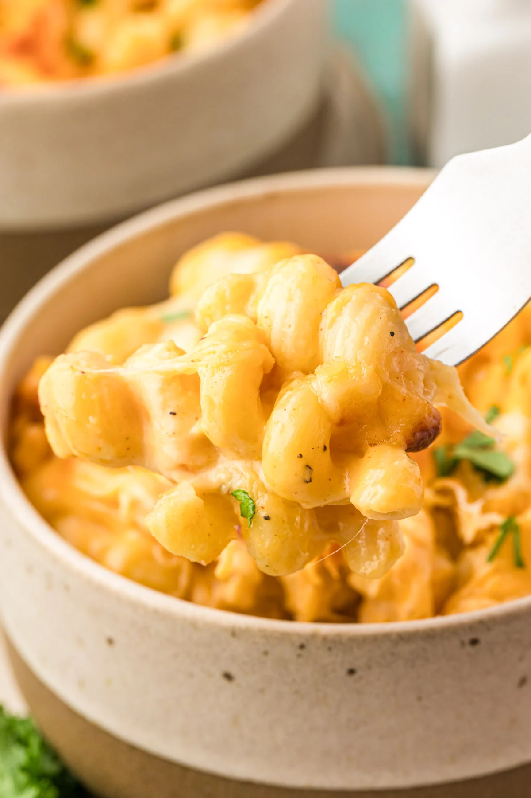

HOME
Tini's Mac and Cheese

Ingredients
- 1 pound mozzarella cheese (Get a block from the deli; it's harder, cheaper, and easier to shred than the softer packaged balls.)
- 1 pound Colby Jack cheese
- 8 ounces sharp cheddar (yellow preferred)
- 1 pound cavatappi pasta
- 1 teaspoon garlic powder
- 1 teaspoon smoked paprika
- 1 teaspoon coarse salt
- ½ teaspoon ground black pepper
- 3 tablespoons salted butter
- 3 tablespoons all-purpose flour
- 1 (12 oz.) can evaporated milk
- 2 cups heavy cream
- 1 tablespoon Dijon mustard
- fresh chopped parsley for garnish
Directions
- Preheat the oven to 350°F.
- Shred the blocks of cheese: 1 pound mozzarella cheese, 1 pound Colby Jack cheese, and 8 ounces sharp cheddar into a large mixing bowl, then toss together and transfer half to a separate bowl.
- Cook 1 pound cavatappi pasta in salted water according to package directions for al dente. Drain and set aside.
- While the pasta is cooking, combine 1 teaspoon garlic powder, 1 teaspoon smoked paprika, 1 teaspoon coarse salt, and ½ teaspoon ground black pepper in a small prep bowl and set aside.
- Melt 3 tablespoons salted butter in a skillet, then add half the seasoning mix and stir.
- Add 3 tablespoons all-purpose flour and immediately whisk and cook for 1 to 2 minutes, the butter/flour mixture should be bubbling.
- Add the 1 (12 oz.) can evaporated milk and whisk constantly. Once it begins to thicken and bubble in the middle of the pan, add 2 cups heavy cream, the remaining half of the seasoning, and 1 tablespoon Dijon mustard and whisk until thickened.
- Add half of the shredded cheese mixture to the skillet, a handful at a time, and stir until completely melted and thick.
- Add the cooked pasta to the cheese sauce and stir to coat.
- Transfer half the pasta mixture to a 9x13-inch baking pan and layer with a third of the remaining cheese. Add the rest of the mac and cheese on top then finish with the rest of the cheese.
- Bake for 25 to 30 minutes, then broil for 1 to 2 minutes to give the mac and cheese a nice bubbly, golden brown top.